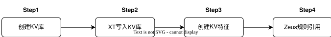
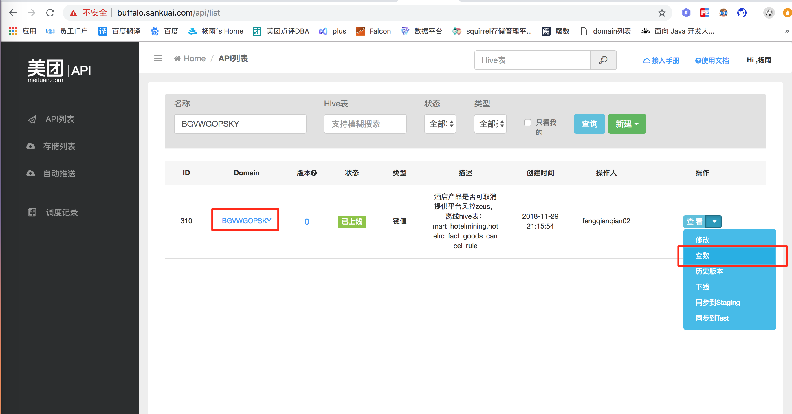
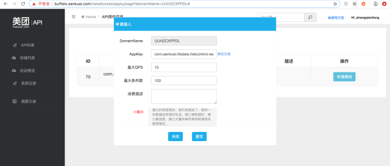
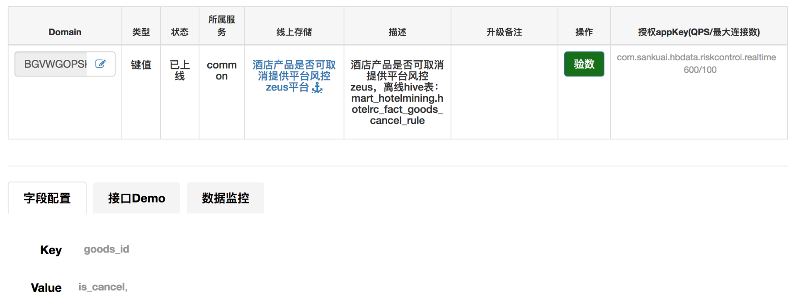
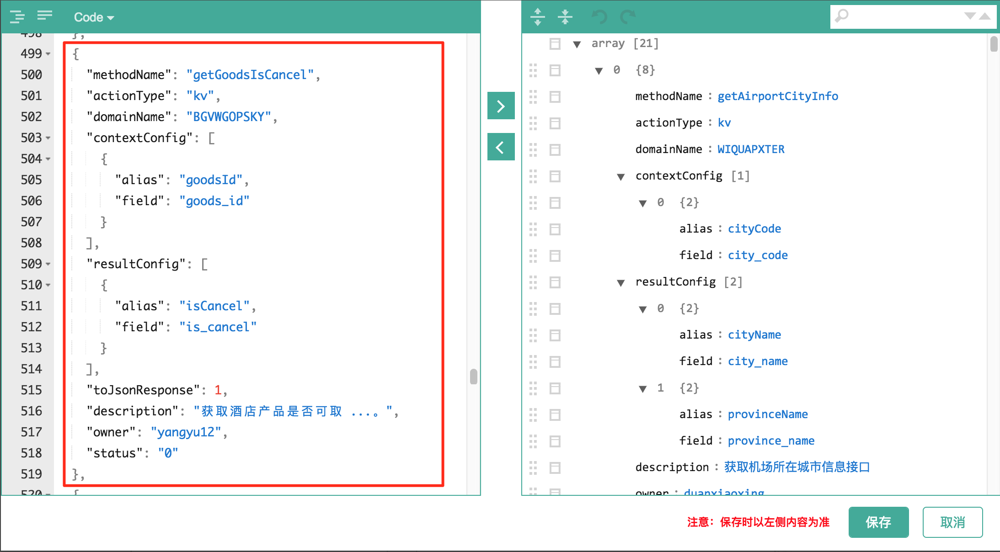
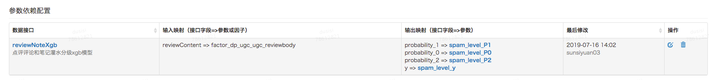

说明：离线数据应用到实时策略

通过将离线数据写入KV库，并创建KV特征在Zeus中引用的方式。
KV库说明：🌟KV数据服务用户指南
创建KV库：🌟KV数据服务用户指南-3.1 创建KV库
XT写入KV库：🌟KV数据服务用户指南-3.5.2 XT写KV库
创建KV特征：🌟KV数据服务用户指南-3.4.1 如何在Zeus读取KV库；如果所在Zeus空间未切换特征平台请参考：未切换特征平台的Zeus空间使用KV库说明
Zeus规则引用：🌟KV数据服务用户指南-3.4.1 如何在Zeus读取KV库
历史解决方案备份
一、背景
解决：
- 离线数据需要应用到实时策略中，可通过与数据组对接，最终以数据接口的方式在Zeus上应用；
二、操作流程
Step1: 策略PM提供离线数据、预估使用场景的QPS和测试数据一条
Step2: 数据RD在Buffalo上配置API并完成数据验证及接口授权
Buffalo线上网址：http://buffalo.sankuai.com/， 可配置API(Buffalo)使用手册
API配置完成后提供Zeus值班相关配置信息，包括：Buffalo Domain，输入字段，输出字段、接口说明
数据验证及接口授权操作说明
数据验证：

接口授权：找mengqingxi配置接口授权Appkey（com.sankuai.hbdata.riskcontrol.realtime）和QPS，10分钟延迟生效
目前Buffalo接受自助授权，点击申请授权后，填写相关信息即可完成授权：
AppKey填写com.sankuai.hbdata.riskcontrol.realtime
最大QPS按需填写
最大条件数跟业务方沟通后填写


Step3: Zeus值班在OCTO上配置映射关系
配置完成后，返回相关Zeus数据接口注册信息，包括：methodName（接口名称），contextConfig.alias（输入字段），resultConfig.alias（输出字段）
映射关系配置操作说明
https://octo.sankuai.com/serverOpt/operation?appkey=com.sankuai.hbdata.riskcontrol.realtime#config
MCC Key :dataServiceConfig
1.methodName Zeus RD自定义，不重复即可
2.actionType一般为kv
3.domainName和Buffalo Domain名称一致
4.contextConfig为key配置
a.field和Buffalo接口key一致
b.alias自定义，同一接口alias不重复即可
5.resultConfig为结果配置
a.field和Buffalo接口value一致
b.alias自定义，同一接口alias不重复即可
6.toJsonResponse:是否转换为json格式返回 0 - 转换 1 - 不转换
7.status:0 - 在线 1 - 下线

Step4: Zeus值班在Zeus上注册数据接口
Zeus线上网址：https://zeus.sankuai.com/fetcher/add，按Zeus提供信息配置，测试通过即可
由PM提供业务线
AppKey选择：com.sankuai.hbdata.riskcontrol.realtime
接口名：methodName（接口名称）
输入字段：contextConfig.alias（输入字段）
返回字段：resultConfig.alias（输出字段）
备注：接口说明
负责人：数据组PM、策略PM
超时时间：Zeus自定义
合法值和非法值：不清楚先不要填写


Zeus测试返回信息含义
SUCCESS(0, "success"),
METHOD_NOT_EXIST(1, "no such method"),
METHOD_NOT_ONLINE(2, "method not online"),
DATA_ACTION_ERROR(3, "fetch data error"),
DATA_EMPTY(4, "data empty"),
METHOD_CONFIG_ERROR(5, "method config error"),
DATA_ACTION_CONFIG_ERROR(6, "data action config error"),
UNKNOWN_ERROR(-1, "unknown error");
Zeus测试返回“no such method”，尝试重新配置下MCC，稍等再重试
其他错误一般为配置错误，检查配置即可
Step5: 策略PM在Zeus配置参数-数据接口映射关系
Zeus线上网址：https://zeus.sankuai.com/param/add_fetcher_dependent
AppKey选择：com.sankuai.hbdata.riskcontrol.realtime
数据接口：Zeus反馈的methodName（接口名称）
接口的输入、输出参数同已经在Zeus上配置的参数进行依赖映射配置

三、FAQ
Q1: 接口配置成功完成后，线上策略应用为什么参数值为空/或无值？
A : 是否在Zeus上接口注册时配置了合法值和非法值
Q1: 接口配置成功完成后，接口调用不通？
A：确认是否进行过buffalo授权。